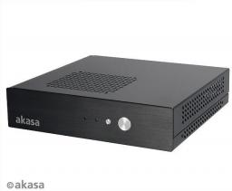

Najpopularniejsze formaty obudów
Tower

Obudowa typu Tower - to rodzaj obudowy komputera stacjonarnego, która ma kształt pionowej wieży. Umieszcza się w niej najważniejsze podzespoły komputera, takie jak płyta główna, procesor, karta graficzna, pamięć RAM i dyski.
Rodzaje obudów Tower
- Mini Tower – mała obudowa, zajmuje niewiele miejsca
i mieści mniej podzespołów.
- Mid Tower – średnia obudowa, popularna w komputerach
domowych i gamingowych.
- Full Tower – duża obudowa, oferuje dużo miejsca
na dodatkowe podzespoły i rozbudowane chłodzenie.
Desktop

Obudowa typu Desktop - to rodzaj obudowy komputera stacjonarnego, która ma kształt poziomy i jest szersza niż wyższa. Zazwyczaj ustawia się ją na biurku, a na jej górnej powierzchni można postawić monitor, jeśli obudowa jest do tego przystosowana. Wewnątrz obudowy znajdują się najważniejsze podzespoły komputera, takie jak płyta główna, procesor, pamięć RAM, dysk oraz zasilacz. Jej konstrukcja pozwala na wygodne korzystanie z komputera w miejscach, w których wysokość dostępnej przestrzeni jest ograniczona. Zalety obudowy Desktop: Pozioma konstrukcja ułatwia ustawienie komputera na biurku. Może pozwalać na umieszczenie monitora na obudowie. Dobrze sprawdza się w biurach i stanowiskach pracy. Wady obudowy Desktop: Zazwyczaj oferuje mniej miejsca na podzespoły niż duże obudowy Tower. Może ograniczać możliwość rozbudowy komputera. W niektórych modelach trudniej zapewnić odpowiednie chłodzenie podzespołów. Obudowy typu Desktop były szczególnie popularne w starszych komputerach biurowych. Obecnie częściej spotyka się je w wybranych komputerach firmowych i kompaktowych zestawach komputerowych. Ich główną cechą jest pozioma konstrukcja, która odróżnia je od pionowych obudów Tower.